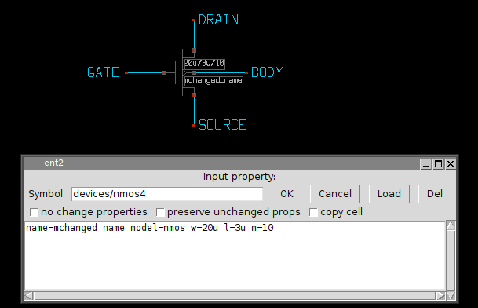
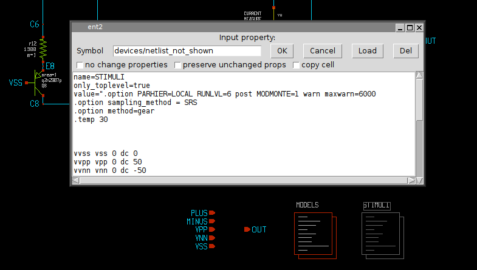
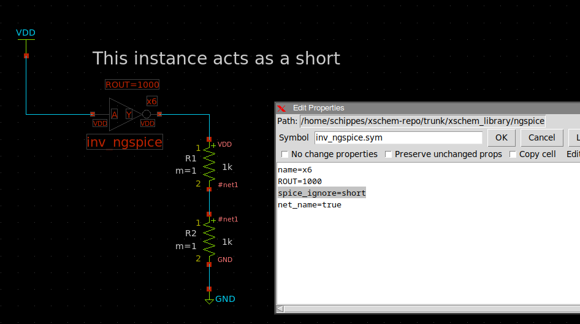
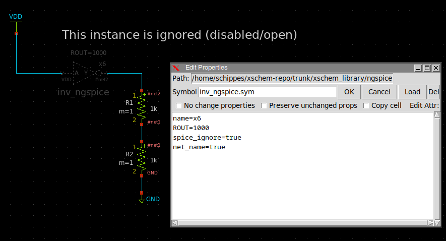
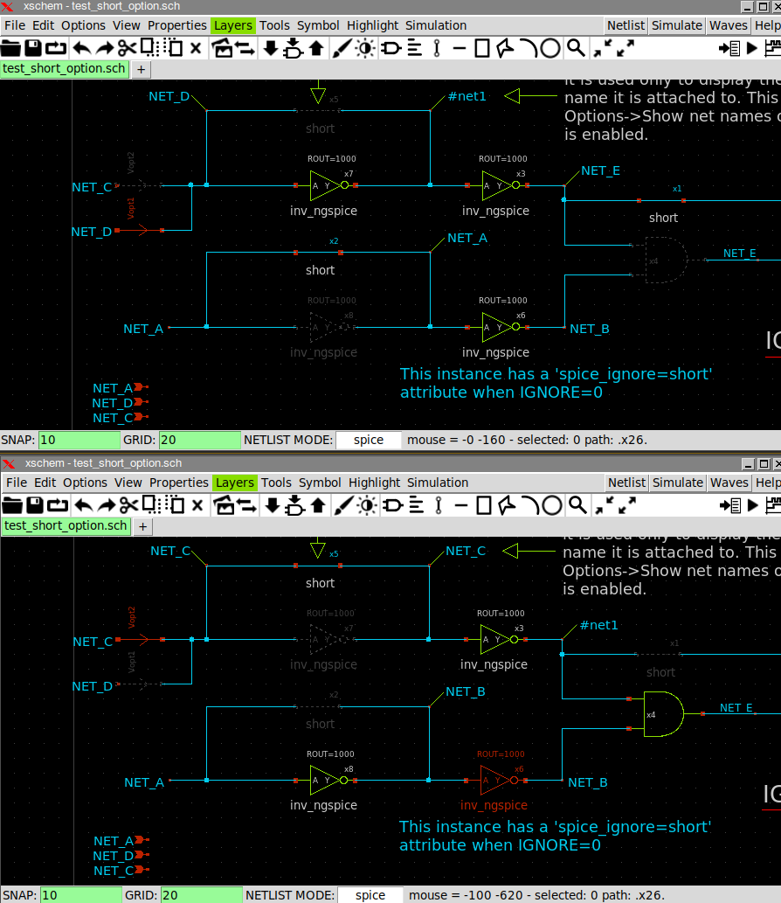
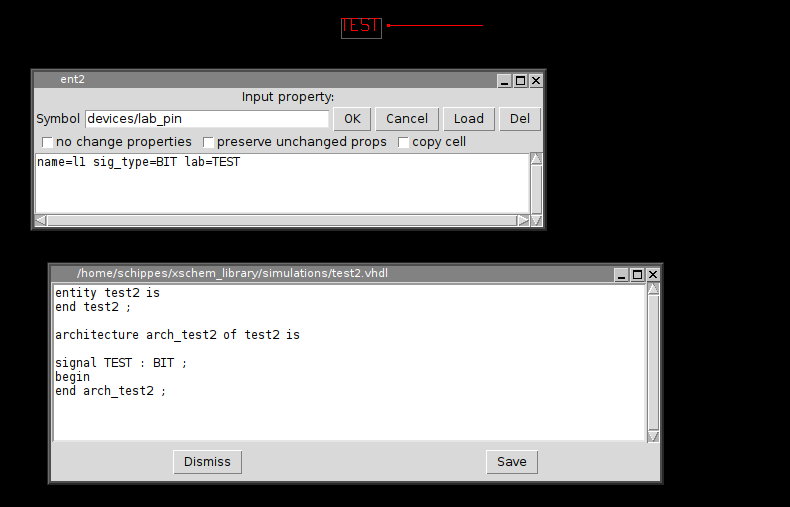
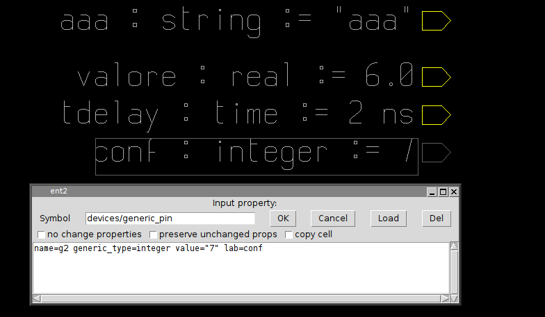

COMPONENT PROPERTY SYNTAX
Component property strings can be set in the usual way with the 'q' on a selected component instance or by menu Properties --> Edit
The dialog box allows to change the property string as well as the symbol reference. The property string is essentially a list of attribute=value items. As with symbol properties if a value has white space it should be double-quoted. The following property definitions are identical:
name=mchanged_name model=nmos w=20u l=3u m=10
name="mchanged_name" model="nmos" w="20u" l="3u" m="10"
Given the role of the " character, if quoted values are needed escapes must be used, like in the following example where the model name will be with quotes in netlist:
name="mchanged_name" model="\"nmos\"" w="20u" l="3u" m="10"
or
name="mchanged_name" model=\"nmos\" w="20u" l="3u" m="10"
the resulting SPICE netlist will be:
mchanged_name DRAIN GATE SOURCE BODY "nmos" w=20u l=3u m=10
There is no limit on the number of attribute=value items, each attribute should have a corresponding @attribute in the symbol definition format, but this is not a requirement. There are a number of special attributes as we will see later.
Important: a name=<inst_name> item is mandatory and must be placed in component property string to get a valid netlist, as this is the partname or so-called refdes (reference designator). If <inst_name> is already used in another component XSCHEM will auto-rename it to a unique name preserving the first letter (which ts a device type indicator for SPICE like netlists).
PREDEFINED COMPONENT ATTRIBUTES
- name
- embed
- url
- program
- tclcommand
- only_toplevel
- global
- lock
- hide
- hide_texts
- text_size_<n>
- text_layer_<n>
- attach
- highlight
- net_name
- place
- vhdl_ignore
- spice_ignore
- verilog_ignore
- tedax_ignore
- lvs_ignore
This defines the name of the instance. Names are unique, so if for example multiple MOS components are placed in the design one should be named m1 and the second m2 or anything else, provided the names are different. XSCHEM enforces this, unless Options -> allow duplicated instance names is set. If a name is given that already exist in the current schematic it will be renamed. Normally the template string defines a default name for a given component, and especially for SPICE compatibility, the first character must NOT be changed. For example, the default name for a MOS transistor is m1, it can be renamed for example to mcurr_source but not for example to dcurr_source. XSCHEM does not enforce that the first character is preserved, it's up to the designer to keep it consistent with the component type.
When the embed=true is set on a component instance the corresponding symbol will be saved into the schematic (.sch) file on the next save operation. This allows to distribute schematic files that contain the used symbols so these will not depend on external library symbols. When this attribute is set on a component instance, all instances in the schematic referring to the same symbol will use the embedded symbol definition. When descending into an embedded symbol, any changes will be local, meaning that no library symbol will be affected. The changes will be saved using the embedded tag ([...]) into the schematic file. Removing this attribute will revert to external symbols after saving and reloading the schematic file.
This attribute defines a location (web page, file) that can be viewed when hitting the <shift>H key (or <Alt> left mouse button) on a selected component. This is very useful to link a datasheet to a component, for example. The default program used to open the url is xdg-open. this can be changed in the ~/xschemrc configuration file with the launcher_default_program variable. url can be an http link or a local file that has a default association known to xdg-open.
this attribute can be used to specify an application to be used to open the url link, if the default application has to be changed or the file type is unknown. for example program=evince may be given to specify an application for a pdf file specified with url
this can be any tcl statement (or group of statements separated by semicolons) including all xschem-specific
commands, the statement will be executed when pressing the <shift>H key
(or <Alt> left mouse button) on the selected instance.
The tclcommand and url properties are mutually exclusive.
this attribute is valid only on netlist_commands type symbols and specifies that the symbol should be netlisted only if it is instantiated in the top-most hierarchy. This is very useful for spice commands. Spice commands are placed in a special netlist component as we will see and are meaningful only when simulating the block, but should be skipped if the component is simulated as part of a bigger system which has its own (at higher hierarchy level) netlistcomponent for Spice commands.
A global=true attribute on instances of label type symbols (like lab_pin.sym, lab_net.sym, vdd.sym, gnd.sym) will set the specified node to global in SPICE netlists, adding a .GLOBAL statement line for the node. This will override symbol global=... setting if any.
A lock=true attribute will make the symbol not editable. the only way to make it editable again is to double click on it to bring up the edit attributes dialog box and set to false. This is useful for title symbols.
A hide=true attribute will only display the symbol bounding box.
A hide_texts=true attribute will hide all symbol texts.
This attribute sets the size of symbol text item number n. This allows instance based symbol text sizing.
This attribute sets the layer of symbol text item number n. This allows instance based symbol text color customization.
An attribute attach="x1 g3 p4" will "attach" specified objects that have a matching name=...
attribute. These objects can be any xschem objects, like other elements, wires, rectangles, polygons, texts etc.
Attached objects will be selected when selecting the component with this attribute set.
This allows to create "object groups"
If set to true the symbol will be highlighted when one of the nets attached to its pins are highlighted.
If set to true the #n:net_name symbol attributes will display the net names attached to pin terminals. the n is a pin number or name.
The place=end attribute is only valid only for netlist_commands type symbols, and tells XSCHEM that this component must be netlisted last. This is necessary for some spice commands that need to be placed after the rest of the netlist.
The place=header attribute is only valid only for netlist_commands type symbols and spice netlisting mode, it tells XSCHEM that this component must be netlisted in the very first part of a spice netlist. This is necessary for some spice commands that need to be placed before the rest of the netlist.
These 4 attributes tell XSCHEM to ignore completely the instance in the respective netlist formats. Allowed values for these attributes are true (or open), false and short If short is specified the instance will short together all its pins. For this to work only one of the nets connected to the symbol may have a net label attached to it. All other nets will take this name. If more labeled nets connect to the shorted symbol a net short error is reported. Shorted instances are displayed in the pin color (red) layer. See in below image the upper netname of R1 is VDD.
Disabled components (spice_ignore=true or spice_ignore=open) are displayed in grey.
This attribute works in the same way as above attributes, may take the values true (or open), false or short, and will affect the specific instance behaviour in the same way, but only if tcl variable lvs_ignore is set to 1. This can be done in the Simulation menu: Set 'lvs_ignore' variable. If this lvs_ignore is set on the instance it will be shorted / ignored or kept as is depending on its lvs_ignore attribute and will be effective in all netlisting formats. This is mostly used to modify the produced netlist automatically when doing schematic vs layout (LVS) comparison.
By using the *_ignore attributes you can modify the circuit depending on the value of a tcl variable:
just set the attribute to something like:
spice_ignore="tcleval([if {$IGNORE == 1} {return {true}} else {return {false}}])"
or:
spice_ignore="tcleval([if {$IGNORE == 1} {return {short}} else {return {false}}])" If any of these attributes are present and not empty and the symbol type is set to subcircuit
the corresponding netlister will ignore the schematic subcircuit for this specific instance
and dump into the netlist the content of this attribute.
This attribute must be paired with a schematic=... attribute set on the instance that tells
the subcircuit name to use for this particular instance.
The typical usage is to include a file, example:
verilog_sym_def="tcleval(`include \"[abs_sym_path verilog_include_file.v]\")"
In this example a verilog_include_file.v is included using the verilog `include directive.
In order to generate a full path for it the abs_sym_path TCL function is used that searches for this file
in any of the XCHEM_LIBRARY_PATH directories. Since TCL is used the attribute is wrapped into a tcleval(...),
The following will appear in the generated netlist:
// expanding symbol: verilog_include.sym # of pins=3 // sym_path: /home/schippes/.xschem/xschem_library/verilog_include.sym `include "/home/schippes/.xschem/xschem_library/verilog_include_file.v"
For VHDL type netlist, this tells that the current label names a signal (or constant) of type sig_type. For example a label can be placed with name TEST and sig_type=BIT. The default type for VHDL if this property is missing is std_logic. The following picture shows the usage of sig_type and the resulting VHDL netlist. This property is applicable only to label type components: ipin.sym, iopin.sym, opin.sym, lab_pin.sym, lab_wire.sym.
This is the same as sig_type but for verilog netlisting: can be used to declare a wire or a reg or any other datatype supported by the verilog language.
generic_type defines the type of parameters passed to VHDL components. Consider the following examples of placement of generic_pin components in a VHDL design:
As you will see in the parameters slide, generics (they are just parameters passed to components) can be passed also via property strings in addition to using generic_pin components.
The class attribute is used to declare the class of a VHDL signal, most used classes are signal and constant. Default if missing is signal.
This attribute contains a SPICE .model or .subckt specification (device_model=".model D1N4148 D ....") that will be printed at end of netlist only once for the specified component (D1N4148 in the example). device_model attributes defined at instance level override the device_model set in the symbol if any.
This attribute specifies an alternate schematic file to open when descending into the subcircuit.
This is done only for the specific instance allowing to differentiate implementation ona specific
instance of a given subcircuit.
The specified schematic must have the same interface (in/out/inout pins) as the base schematic (that
is inferred from the symbol name).
Example: schematic=sky130_tests/inv2.sch
This will override at instance level the value of attribute pinnumber of pin name of the symbol. This is mainly used for tedax, where by back annotation a connection to a symbol must be changed.
This will override at instance level the value of attribute pinnumber of indexth pin of the symbol. This is mainly used for tedax, where by back annotation a connection to a symbol must be changed. This notation is faster since xschem does not have to find a pin by string matching.
This is a general mechanism where at instance level a pin attribute may be overridden for netlisting. Example:
sig_type(OUT)=bit_vector (set VHDL type of pin OUT to bit_vector).
TCL ATTRIBUTE SUBSTITUTION
Any attribute and symbol text can be embedded in a tcleval(....) construct, the string inside the
parentheses will be passed to the tcl interpreter for evaluation. This allows to use any tcl
variable/command/expression. Example:
value="tcleval([expr {[info exists ::resval] ? $::resval : {100k}}])"
this attribute will set value (example: value of a resistor) to 100k if global tcl variable
resval is not set or to the value of resval if set.